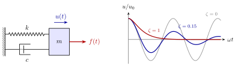
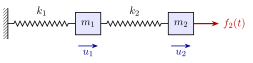
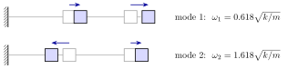
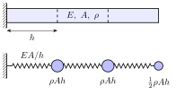
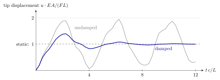

Lecture 5
Mass, Damping, and Time
5.1 What statics left out
Every structure so far was at rest. We applied a load, asked where the nodes end up, and never asked how they get there. That was honest as long as loads are applied slowly. Apply them quickly — drop a weight, strike a bell, drive over a bridge — and a second property of the structure wakes up: it has mass, and mass resists being accelerated.
The plan of this lecture copies Lecture 1 on purpose. We start with springs and point masses, where everything can be seen and computed by hand, move quickly to several degrees of freedom, and only at the end replace the springs by bars with \(E\), \(A\), \(L\) and a density \(\rho\). Three new characters appear — the mass \(m\), the damper \(c\), and the time \(t\) — and one old one stays exactly as it was: the stiffness matrix \(\mathbf{K}\), assembled as in Lecture 1.
5.2 One mass on one spring
Attach a point mass \(m\) to the spring of Fig. 1.1. Newton’s second law for the mass: the applied force minus the spring force equals mass times acceleration, \[m\,\ddot u + k\,u = f(t), \qquad \ddot u = \frac{\mathrm{d}^2 u}{\mathrm{d}t^2}. \tag{5.1}\] Read it as statics with one more force: \(k u = f - m\ddot u\). The inertia force \(-m\ddot u\) acts like an extra load, opposing acceleration. Set \(\ddot u = 0\) and Lecture 1 is back.
Pull the mass aside to \(u_0\) and let go, with no load. Try \(u(t) = u_0\cos\omega t\) in (5.1): it fits if and only if \[\omega = \sqrt{\frac{k}{m}} , \tag{5.2}\] the natural (circular) frequency, in radians per second; the period of one oscillation is \(T = 2\pi/\omega\). A stiff spring or a light mass vibrates fast, a soft spring or a heavy mass slowly — and the structure chooses this frequency itself, whatever we do to start it. During the motion, energy is handed back and forth: all strain energy \(\tfrac12 k u^2\) at the turning points, all kinetic energy \(\tfrac12 m\dot u^2\) when passing through \(u = 0\), and the sum constant.
5.3 Damping
Real oscillations die out. The simplest model is a dashpot parallel to the spring (Fig. 5.1), which resists velocity: \[m\,\ddot u + c\,\dot u + k\,u = f(t). \tag{5.3}\]

One number tells the whole story, the damping ratio \[\zeta = \frac{c}{2\sqrt{k\,m}} .\] For \(\zeta < 1\) the mass still oscillates, with an amplitude shrinking like \(e^{-\zeta\omega t}\) and a slightly lower frequency \(\omega_d = \omega\sqrt{1-\zeta^2}\). For \(\zeta \ge 1\) it creeps back without crossing zero; \(\zeta = 1\), critical damping, is the fastest return without overshoot (door closers and measuring instruments aim for it). Structures are lightly damped: steel and concrete constructions typically have \(\zeta\) of a few percent, so \(\omega_d\) and \(\omega\) are practically equal — but the few percent decide how long a vibration lasts and how violent a resonance becomes. And after the motion has died out, what remains is \(k u = f\): statics is where a damped structure ends up.
5.4 Several masses: the equations of motion
Now the step that matters. Take the two-spring chain of Section 1.3, fix node 1, and put a point mass on each free node (Fig. 5.2). Write Newton’s law for each mass; the spring forces are exactly those of Lecture 1: \[\begin{aligned} m_1\ddot u_1 + k_1 u_1 + k_2(u_1 - u_2) &= f_1,\\ m_2\ddot u_2 + k_2(u_2 - u_1) &= f_2 . \end{aligned}\]

In matrix form, \[\underbrace{\begin{bmatrix} m_1 & 0\\ 0 & m_2\end{bmatrix}}_{\textstyle\mathbf{M}} \begin{bmatrix}\ddot u_1\\ \ddot u_2\end{bmatrix} + \underbrace{\begin{bmatrix} k_1+k_2 & -k_2\\ -k_2 & k_2\end{bmatrix}}_{\textstyle\mathbf{K}} \begin{bmatrix} u_1\\ u_2\end{bmatrix} = \begin{bmatrix} f_1\\ f_2\end{bmatrix}, \qquad \boxed{\;\mathbf{M}\,\ddot{\mathbf{u}} + \mathbf{C}\,\dot{\mathbf{u}} + \mathbf{K}\,\mathbf{u} = \mathbf{f}(t)\;} \tag{5.5}\] where the boxed form includes damping and holds for any number of degrees of freedom. Take stock of how little is new:
\(\mathbf{K}\) is the stiffness matrix of Lecture 1, assembled as always (rows and columns of fixed nodes already removed). Dynamics does not touch it.
\(\mathbf{M}\) is the mass matrix. With point masses sitting on the nodes it is diagonal: node \(i\) contributes \(m_i\) to entry \(M_{ii}\) and nothing else. Assembly could not be simpler — and a diagonal matrix is inverted by dividing. We will use diagonal mass matrices throughout; Section 5.8 explains what that means for bars, and what the alternative is.
\(\mathbf{C}\) collects the dashpots. A dashpot between two nodes produces \(c\left[\begin{smallmatrix}1&-1\\-1&1\end{smallmatrix}\right]\) and is assembled exactly like a spring, with velocities in place of displacements.
Boundary conditions are those of Lecture 1, now holding at every instant. In addition, time needs a start: the initial conditions \(\mathbf{u}(0)\) and \(\dot{\mathbf{u}}(0)\), two per degree of freedom, because the equation is second order in time.
5.5 Natural frequencies and modes
How does this system vibrate when left alone (\(\mathbf{f} = \mathbf{0}\), no damping)? Ask for the simplest conceivable motion: all nodes moving in step, with one frequency and a fixed shape \(\boldsymbol{\phi}\), \[\mathbf{u}(t) = \boldsymbol{\phi}\,\cos\omega t .\] Insert into \(\mathbf{M}\ddot{\mathbf{u}} + \mathbf{K}\mathbf{u} = \mathbf{0}\); since \(\ddot{\mathbf{u}} = -\omega^2\boldsymbol{\phi}\cos\omega t\), the cosine cancels and \[\bigl(\mathbf{K} - \omega^2\mathbf{M}\bigr)\,\boldsymbol{\phi }= \mathbf{0} . \tag{5.6}\] This is an eigenvalue problem. A nonzero shape \(\boldsymbol{\phi}\) exists only if the matrix in brackets is singular, that is, only for special values of \(\omega\): the natural frequencies. Each comes with its shape, the mode.
By hand.
Let \(k_1 = k_2 = k\) and \(m_1 = m_2 = m\), and write \(\lambda = \omega^2 m/k\). The determinant of \(\mathbf{K} - \omega^2\mathbf{M}\) must vanish: \[\det\begin{bmatrix} 2-\lambda & -1\\ -1 & 1-\lambda\end{bmatrix} = \lambda^2 - 3\lambda + 1 = 0 \quad\Longrightarrow\quad \lambda_{1,2} = \frac{3\mp\sqrt5}{2} = 0.382,\ \ 2.618 ,\] \[\omega_1 = 0.618\sqrt{\frac km}, \qquad \omega_2 = 1.618\sqrt{\frac km} .\] The second row of (5.6) then gives each shape, \(\phi_1 = (1-\lambda)\,\phi_2\): \[\boldsymbol{\phi}^{(1)} = \begin{bmatrix} 0.618\\ 1\end{bmatrix}, \qquad \boldsymbol{\phi}^{(2)} = \begin{bmatrix} -1.618\\ 1\end{bmatrix}.\] In the first mode both masses swing the same way, the outer one further — the chain sways as a whole, slowly. In the second they swing against each other, the spring between the masses works hard, and the frequency is \(2.6\) times higher (Fig. 5.3). A mode is determined only up to a factor: it is a shape, not an amplitude.

A system with \(n\) degrees of freedom has \(n\) natural frequencies and \(n\) modes. For anything larger than \(2\times2\) nobody expands determinants; eigenvalue solvers are standard library routines.
5.6 Why modes matter: they decouple the system
Check one property of the two shapes just found: \[\boldsymbol{\phi}^{(1)\mathsf T}\mathbf{M}\,\boldsymbol{\phi}^{(2)} = m\,(0.618\cdot(-1.618) + 1\cdot 1) = 0 .\] The modes are orthogonal with respect to \(\mathbf{M}\), and likewise with respect to \(\mathbf{K}\). This is no accident of the example; for distinct frequencies it follows from the symmetry of \(\mathbf{K}\) and \(\mathbf{M}\) — the symmetry that Lecture 1 traced back to energy.
The consequence is the central idea of structural dynamics. Any motion can be written as a mixture of the modes, with time-dependent amounts \(q_i(t)\): \[\mathbf{u}(t) = q_1(t)\,\boldsymbol{\phi}^{(1)} + q_2(t)\,\boldsymbol{\phi}^{(2)} .\] Insert this into the undamped equation \(\mathbf{M}\ddot{\mathbf{u}} + \mathbf{K}\mathbf{u} = \mathbf{f}(t)\) and multiply from the left by \(\boldsymbol{\phi}^{(i)\mathsf T}\). Orthogonality removes every mixed term. What remains of the stiffness term follows from (5.6): \(\boldsymbol{\phi}^{(i)\mathsf T}\mathbf{K}\,\boldsymbol{\phi}^{(i)} = \omega_i^2\,\boldsymbol{\phi}^{(i)\mathsf T}\mathbf{M}\,\boldsymbol{\phi}^{(i)}\). Divide by \(\boldsymbol{\phi}^{(i)\mathsf T}\mathbf{M}\,\boldsymbol{\phi}^{(i)}\), and what is left is, for each mode separately, \[\ddot q_i + \omega_i^2\, q_i = \frac{\boldsymbol{\phi}^{(i)\mathsf T}\mathbf{f}(t)}{\boldsymbol{\phi}^{(i)\mathsf T}\mathbf{M}\,\boldsymbol{\phi}^{(i)}} . \tag{5.7}\]
Key idea
Modes decouple. Seen in its modes, a structure with \(n\) coupled degrees of freedom is \(n\) independent single-mass oscillators, each with its own frequency \(\omega_i\) and its own share of the load. Everything about one mass on one spring — natural frequency, damping ratio, resonance — therefore applies to every structure, mode by mode.
Two practical readings. A load whose frequency comes close to some \(\omega_i\) drives that mode into resonance, so the first question of any dynamic design is: where are the natural frequencies, and where are the loads? And since slow loads hardly excite the fast modes, the response of a large model can often be described by a handful of the lowest modes — a first glimpse of model reduction, the subject of Lecture D.
Damping in several degrees of freedom.
A general \(\mathbf{C}\) couples the modal equations again. A popular way to keep them apart is Rayleigh damping, \(\mathbf{C} = \alpha\,\mathbf{M} + \beta\,\mathbf{K}\): each mode then simply acquires the damping ratio \(\zeta_i = \alpha/(2\omega_i) + \beta\,\omega_i/2\). The two constants are chosen to give reasonable damping at two frequencies of interest. It is a modelling convenience rather than physics, and worth knowing as such.
5.7 Stepping through time
Modes answer questions about free vibration and steady excitation. For a general load history — and for everything nonlinear in Lecture 6 — we compute the motion directly, step by step. Divide time into steps \(\Delta t\), write \(\mathbf{u}^n\) for the displacement at \(t_n = n\,\Delta t\), and replace the acceleration by the central difference \[\ddot{\mathbf{u}}(t_n) \approx \frac{\mathbf{u}^{n+1} - 2\,\mathbf{u}^{n} + \mathbf{u}^{n-1}}{\Delta t^2}.\] Insert into \(\mathbf{M}\ddot{\mathbf{u}} + \mathbf{K}\mathbf{u} = \mathbf{f}\) at time \(t_n\) and solve for the new displacement: \[\mathbf{u}^{n+1} = 2\,\mathbf{u}^n - \mathbf{u}^{n-1} + \Delta t^2\,\mathbf{M}^{-1}\bigl(\mathbf{f}^n - \mathbf{K}\,\mathbf{u}^n\bigr). \tag{5.8}\] Everything on the right is known: the method is explicit. And here the diagonal mass matrix pays its rent: \(\mathbf{M}^{-1}\) is a division per node, so a time step requires no solution of equations at all — only the force imbalance \(\mathbf{f} - \mathbf{K}\mathbf{u}\) of each node, divided by its mass. (To start, \(\mathbf{u}^{-1}\) is obtained from the initial conditions: \(\mathbf{u}^{-1} = \mathbf{u}^0 - \Delta t\,\dot{\mathbf{u}}^0 + \tfrac12\Delta t^2\,\ddot{\mathbf{u}}^0\), with \(\ddot{\mathbf{u}}^0\) from the equation of motion at \(t=0\).)
By hand.
One mass, \(\omega = 1\), released from \(u^0 = 1\) at rest; exact solution \(\cos t\). Then (5.8) reads \(u^{n+1} = (2 - \Delta t^2)\,u^n - u^{n-1}\). With \(\Delta t = 0.5\): \[\begin{array}{c|ccccc} t & 0 & 0.5 & 1.0 & 1.5 & 2.0\\\hline u^n & 1 & 0.8750 & 0.5313 & 0.0547 & -0.4355\\ \cos t & 1 & 0.8776 & 0.5403 & 0.0707 & -0.4161 \end{array}\] A few percent off with only twelve steps per period. Now be greedy and take \(\Delta t = 2.5\): \[\begin{array}{c|ccccc} t & 0 & 2.5 & 5.0 & 7.5 & 10.0\\\hline u^n & 1 & -2.125 & 8.03 & -32.0 & 128.0 \end{array}\] The numbers do not become inaccurate; they explode, by a factor of four per step. The recurrence shows why: its multiplier \(2-\omega^2\Delta t^2\) must stay between \(-2\) and \(2\) for the solution to remain bounded.
Key idea
The explicit method is only conditionally stable: \[\Delta t \le \frac{2}{\omega_{\max}} ,\] with \(\omega_{\max}\) the highest natural frequency of the model — whether or not that mode matters for the answer. Beyond the limit the computation blows up. For the two-mass chain: \(\Delta t \le 2/1.618 = 1.24\sqrt{m/k}\).
The alternative: implicit methods.
Evaluate the equation of motion at the new time instead, and \(\mathbf{u}^{n+1}\) appears on both sides; each step then requires solving a linear system with a matrix of the form \(\mathbf{M} + \tfrac14\Delta t^2\,\mathbf{K}\) (the average acceleration or trapezoidal rule, a member of the Newmark family). The reward is unconditional stability: the step size is chosen for accuracy alone. The trade is clear and governs practice: explicit methods take very many very cheap steps and suit short, violent events such as impact and crash; implicit methods take few expensive steps and suit slow structural vibration.
5.8 From springs to bars: where is the mass?
As in Section 1.7, replace the springs by bar elements of length \(h\) with \(k = EA/h\). A bar’s mass \(\rho A h\) is spread along its length, not concentrated in points. The simplest answer, and the one we adopt: give half of each element’s mass to each of its nodes, \[\mathbf{m}^e_{\text{lumped}} = \frac{\rho A h}{2}\begin{bmatrix}1&0\\0&1\end{bmatrix}. \tag{5.9}\] The bar becomes a chain of point masses and springs (Fig. 5.4), \(\mathbf{M}\) stays diagonal, and everything above applies unchanged.

Remark
Not the only way. Apply the recipe of Lecture 2 to the inertia term — weight with the shape functions and integrate — and the result is the consistent mass matrix \(\mathbf{m}^e = \int_0^h \mathbf{N}^{\mathsf{T}}\rho A\,\mathbf{N}\,\mathrm{d}\xi = \frac{\rho A h}{6}\left[\begin{smallmatrix}2&1\\1&2\end{smallmatrix}\right]\), which is not diagonal. It is the mathematically natural choice and often somewhat more accurate; adding up each of its rows gives back the lumped matrix. We use lumped masses because a diagonal \(\mathbf{M}\) makes life easy — no equations to solve in explicit time stepping — and because that is what a large part of engineering practice does for the same reason.
How good is it? A test by hand.
A bar fixed at one end, free at the other. The exact lowest natural frequency is \(\omega_1 = \tfrac{\pi}{2}\,c/L = 1.571\,c/L\), where \(c = \sqrt{E/\rho}\) is the speed at which waves travel along the bar.
One element. One spring \(EA/L\), one mass \(\tfrac12\rho A L\) at the tip: \(\omega = \sqrt{k/m} = \sqrt2\,c/L = 1.414\,c/L\), ten percent low.
Two elements, \(h = L/2\): stiffness \(\frac{EA}{h}\left[\begin{smallmatrix}2&-1\\-1&1\end{smallmatrix}\right]\), masses \(\rho A h\) and \(\tfrac12\rho A h\). With \(\lambda = \omega^2\rho h^2/E\), \[\det\begin{bmatrix}2-\lambda & -1\\ -1 & 1-\tfrac{\lambda}{2}\end{bmatrix} = \tfrac12\lambda^2 - 2\lambda + 1 = 0 \quad\Longrightarrow\quad \lambda = 2\mp\sqrt2 ,\] so \(\omega_1 = \sqrt{0.586}\;c/h = 1.531\,c/L\): now \(2.6\) percent low. The pattern continues:
| elements | 1 | 2 | 3 | exact |
|---|---|---|---|---|
| \(\omega_1 L/c\), lumped mass | 1.414 | 1.531 | 1.553 | 1.571 |
| \(\omega_1 L/c\), consistent mass | 1.732 | 1.611 | 1.589 | 1.571 |
| \(\omega_2 L/c\), lumped mass | — | 3.696 | 4.243 | 4.712 |
Three things to read off. The lowest frequency converges quickly. Lumped masses approach it from below, consistent masses from above. And the highest modes of any mesh are poor — the second frequency of the two-element model is 22 percent off — because a mode needs several elements per wave to be represented. Trust the lower part of the spectrum only.
The time step, read physically.
For a chain of lumped bar elements the highest frequency never exceeds \(2c/h\), so the stability limit of Section 5.7 becomes \[\Delta t \le \frac{h}{c} :\] the time step must be shorter than the time a wave needs to cross one element. This explains the price of fine meshes in explicit analysis: halving \(h\) doubles the number of elements and halves the permitted step. For steel, \(c \approx 5000\) m/s; elements of 5 mm allow steps of a microsecond.
5.9 Worked example: a load applied suddenly
A bar fixed at the left end, three elements, lumped masses, in units where \(EA = \rho A = L = 1\) (so \(c = 1\)). At \(t = 0\) a force \(F = 1\) is switched on at the free end and held. Statics says the tip moves to \(FL/EA = 1\). Explicit time stepping with \(\Delta t = 0.25\) (the limit is \(0.345\)) gives Fig. 5.5.

The tip does not stop at the static value: it arrives there with velocity, overshoots to about \(1.9\) — the highest peak in the plot is \(1.94\); the continuous bar reaches exactly \(2\) — and swings back, with the period \(4L/c\) of the lowest mode. A load applied suddenly produces up to twice the displacement, and therefore twice the stress, of the same load applied slowly. That factor of two is the first thing dynamics teaches a designer. With damping (here mass-proportional, \(\mathbf{C} = 0.8\,\mathbf{M}\)) the oscillation decays and the tip settles at \(1\): the static solution of Lecture 1, reached at last. (This damping is heavy: a damping ratio of about \(0.26\) in the lowest mode, far above the few percent of real structures. How \(\mathbf{C}\) enters the time step is shown in Exercise 5.) And taking \(\Delta t = 0.36\), just beyond the limit, produces tip displacements of \(3\), \(-2\), \(7\), … within a dozen steps — the instability announces itself without subtlety.
Remark
First order in time. Transient heat conduction — the rod of Exercise 2 warming up — has the same structure with one time derivative less: \(\mathbf{C}_{\!h}\dot{\mathbf{T}} + \mathbf{K}\,\mathbf{T} = \mathbf{f}\), with a heat capacity matrix in place of the mass matrix, lumped in the same way. Temperatures do not oscillate; they relax toward the steady state. The stepping methods carry over, including the distinction between explicit (conditionally stable) and implicit (unconditionally stable).
5.10 What changed, and what did not
| statics | dynamics (this lecture) |
|---|---|
| \(\mathbf{K}\mathbf{u} = \mathbf{f}\) | \(\mathbf{M}\ddot{\mathbf{u}} + \mathbf{C}\dot{\mathbf{u}} + \mathbf{K}\mathbf{u} = \mathbf{f}(t)\) |
| stiffness matrix \(\mathbf{K}\) | the same \(\mathbf{K}\), plus mass \(\mathbf{M}\) and damping \(\mathbf{C}\) |
| boundary conditions | boundary conditions and initial conditions |
| one linear solve | eigenvalue problem (modes), or many time steps |
| rigid body mode: \(\mathbf{K}\) singular | rigid body mode: a mode with \(\omega = 0\) |
| mesh fine enough for the stress field | also fine enough for the shortest wave of interest |
| load cases reuse the factorized \(\mathbf{K}\) | explicit steps need no factorization at all |
Companion exercise: Exercise 5
Notebook Exercise_5_Dynamics.ipynb : you write a small explicit dynamics code — assembly of a chain with a diagonal mass matrix, natural frequencies and modes, a central-difference time stepper — and use it to reproduce the hand computations of this lecture, find the stability limit by experiment, watch a wave front travel along a bar, and measure how many modes a response really needs.
Looking ahead
One assumption survived this whole lecture untouched: \(\mathbf{K}\) is a constant matrix. Displacements were small, the material obeyed Hooke’s law, and nothing came into contact with anything. Lecture 6 gives up that assumption — and the stepping idea of this lecture, advancing in small increments and solving something simple in each, turns out to be exactly the right preparation.